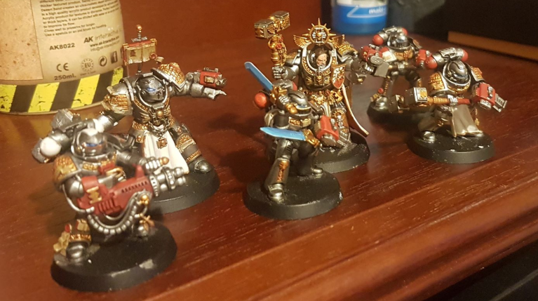

About Me

Thanks for visiting my website. I'm an Automation Engineer working for a Managed Services Provider. Companies outsource their IT to us so that they can focus on what they do best: Their Business.
My team focuses on maintaining a self-service portal so our clients can service their requests on demand. This includes onboarding and offboarding staff members, lifecycle managing their hardware and software in an easy-to-digest overview as well providing a sophisticated knowledge base so that staff members can get the help they need, when they need it.
Outside of work I enjoy going for walks with the Mrs, learning about new concepts and crushing Green Demons (Victoria Bitter) with my friends. Additionally, I enjoy painting my Warhammer miniatures, and playing the tabletop game. I've included a picture above.